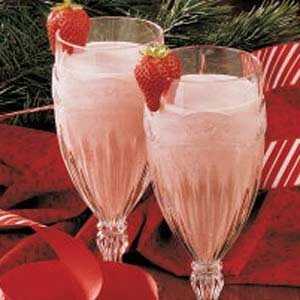

Berry Beverage

Image of the finished beverage!
This recipe is extremely easy! Only one step to produce a delicious refreshment.
Ingredients:
- 8 cups cranberry juice
- 1 teaspoon vanilla extract
- 1 quart vanilla ice cream, softened
- 2 cups heavy whipping cream
- 10 ounces pureed strawberries
- 4 cups ginger ale
- 1 cup sugar
- Fresh strawberries, optional
Steps:
- In a large bowl or container, combine the first five ingredients; stir until smooth and the sugar is dissolved. Fold in whipped cream. Slowly add ginger ale; stir gently to mix. Pour into glasses. Garnish with strawberries if desired. Serve immediately.